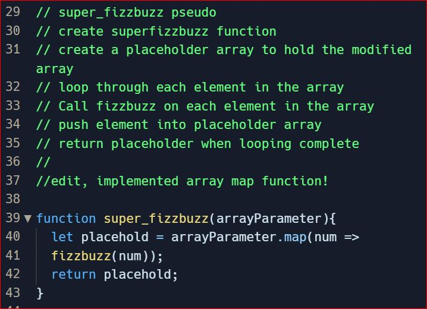
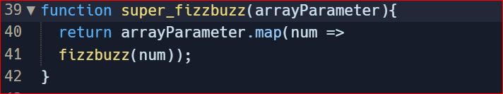

During the initial CSS and HTML blog set up I was having a really tough time figuring out how to get my navigation buttons centred in the middle of the page. It seemed like such a simple problem to overcome but every thing that I would try would leave one small aspect of it not quite how I wanted. It had to do with nesting types and how the flex property works, which I didn't understand well then and only do a bit more so now. I called my friend to help, though HTML and CSS aren't his strong suits either. He did offer me the advice of playing with the different options directly in the browser though. This combined with a bit of googling and good old try on the fly, eventually got those buttons and their text comfortably centred. Whew, first of many steps on the path to competence!
During the Javascript Kata exercises on Replit I was feeling comfortable and relatively more at home with the content so I was able to take the time to do the stretch exercises. Even though I was getting through at quite a pace it would be hubris to think there werent things I could be doing better. In the Super Fizzbuzz exercise I noticed quite quickly that I could re-use the code that I had just written for the fizzbuzz portion. Upon a returning look during a refactoring pass, I realised I could go just a little further. My implementation had been with a classic for loop with calls to the previous function while adding to a new array. What I realised was that I could implement a new function that I had not yet used. By using the array map function I was able to condense around four lines of code into just two. Then, just when I thought I had done all I could, I realised I could remove one redundant declaration and turn it into one elegant return statement with inline function call.

Im still not sure that it is peak efficiency from a character count perspective, but I doubt there is any difference at runtime. Just goes to show there is always room for improvement!

Pseudocode.This comes quite naturally to me and is a core part of my process. I often think
self-analytically and when I began coding the process of pesudocoding even seeped it's way in the opposite
direction into my normal thought process.
Trying something. Try, try and try again. Im quite comfortable with my ability to think creatively and
just see if something fits, though when it doesn't I usually move on to.
Googling. This is the biggest blessing, while sometimes it can seem like a curse with the overload of
available information. I'm more often than not able to sift through the muck and find what could be relevant to my
problem. Although it feeds right back into try, try, google, then try again.
Rubber ducky method. In one of my previous workplaces my coworker made a joking slight at my seeming need
to talk to myself all the time. The thing is she didn't realise my rubber ducky was a super secret limited edition
invisible version...
Reading error messages. Well constructed error messages can be a lifesaver. When you do not understand
them they can be overwhelming and confusing, but i find it you take the time to learn them you will gain a better
understanding of the underlying systems.
Console.logging. Yep. Classic, do it a lot. All the time. Very quick sanity check.
Asking your peers for help. For sure, the peers in the group all seem really friendly and I am quite
comfortable coming to them with questions. I really enjoy co working with others and even acting as a real-life
rubber ducky for others even on prolems I don't understand.
Asking coaches for help. I would absolutely do what I can on my own or with my peers first but im not too
proud to ask for help when I need it. The facilitators have been very friendly and accomodating so far so there is
no fear in that respect.
Improving your process with reflection.
It's often hard to see your own shortcomings from within, but I do my best to reflect and improve where I can.
Better time management would for sure help me do this even better.